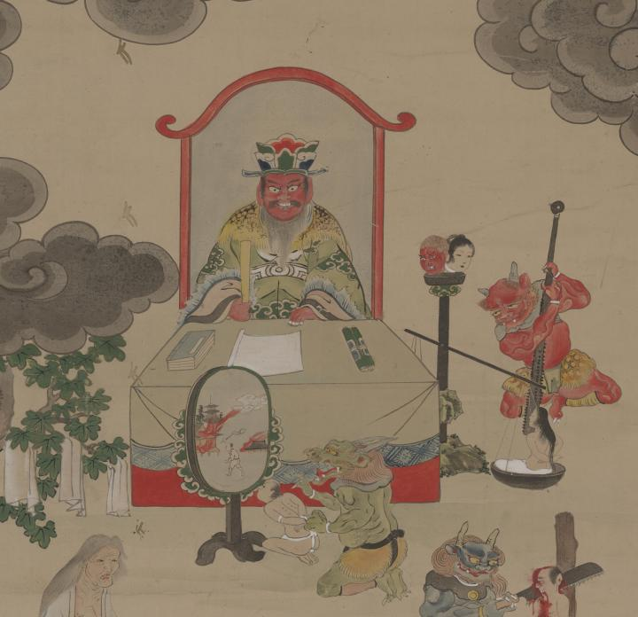

← 图鉴索引

閻魔が死者を審議している。
出典：親書誌：U426_nichibunken_0379：地獄絵図；ジゴク エズ／日付：2014／資源識別子：U426_nichibunken_0379_0001_0000
Copyright (c)2010- International Research Center for Japanese Studies, Kyoto, Japan. All rights reserved.